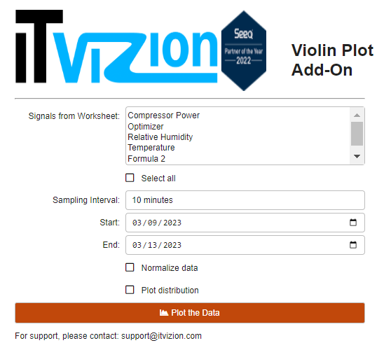
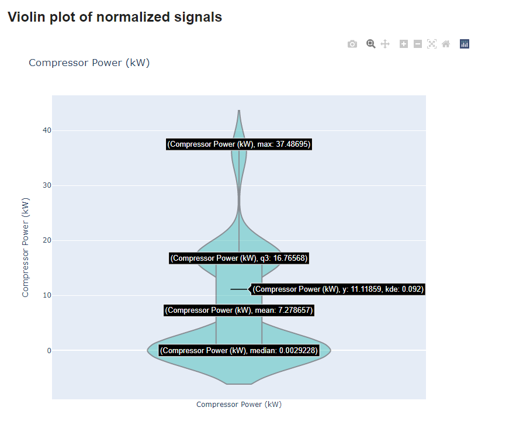
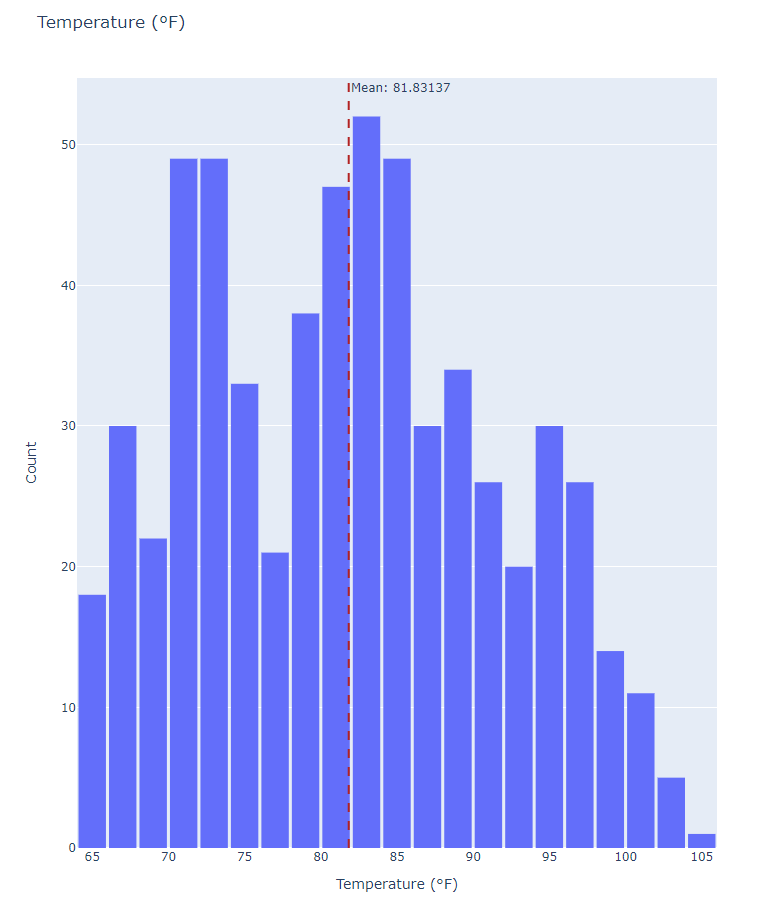
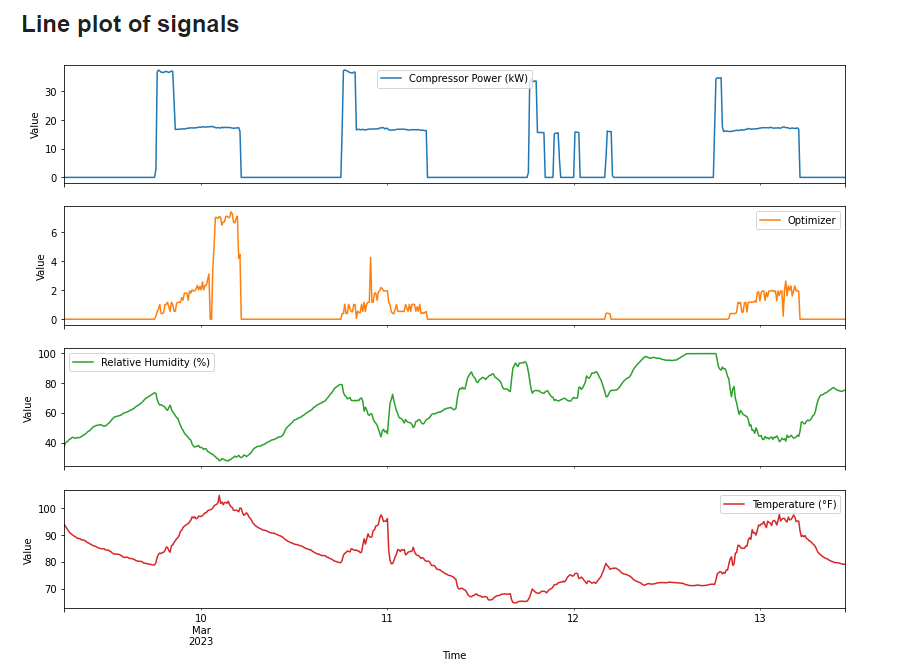
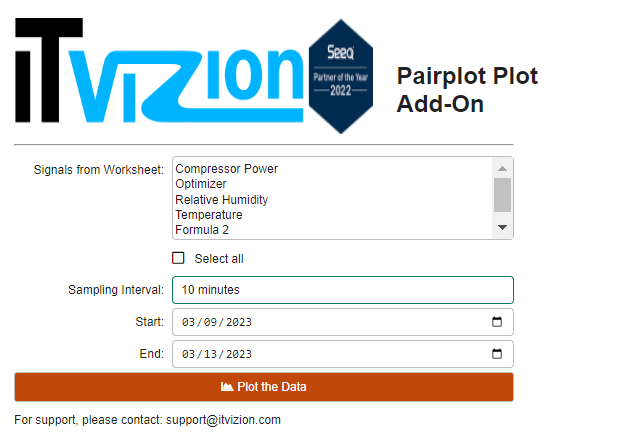

Example Use Cases
Overview
This set of use cases is a small subset of the typical types of analyses that can be conducted using the ITVizion Visualization toolbox tool. All use cases are performed on the same workbook.
Use Case 1. Conceptualizing Signal Variations
Given a certain process, it would be beneficial how different aspects of the process vary. Hence, visualizing the distribution and calculating certain important statistics would assist in gaining a better insight of the data at hand and the process in general.
|  |
| Figure 6. Selecting the signal to plot and respective settings. |
After selecting the desired signals and choosing to normalize the data, we aim to understand each signal’s variance and compare them.
 |
| Figure 7. Violin plot of the selected signals. |
Hence, by looking at the produced plot, it becomes clear that Temperature and Relative Humidity have a similiar variance, while on the other hand, the Optimizer signal contains many outliers that go far away from the mean, up to five times its standard deviation.
However, it would be interesting to see how the mean and variance of Compressor Power behave. So, by unchecking the normalization checkbox, individual violin plots are produced for each signal. By hovering over it, we can see the desired statistics.
|  |
| Figure 8. Individual violin plot and statistics. |
A better look at the Temperature, as shown in the distribution plot in Figure 8, the distribution shows a slight skewness to the smaller values of the signal.
|  |
| Figure 9. Histogram and mean value of the Temperature signal. |
Lastly, the produced line plot shown below, allows us to understand how those variations of the data take place throughout time.
|  |
| Figure 10. Histogram and mean value of the Temperature signal. |
Use Case 2. Identifying Signal Relationships (Interactive)
In order to gain a more thorough understanding of how signals behave and how each one acts conditioned on another, the pairplot would be a suitable tool to explore. Initially, as shown in Figure 10, the desired signals are selected and interval and date parameters are put through.
<
|  |
| Figure 11. Signal and parameter selection. |
After clicking the plotting button, an option to select which string parameter to colour the data by should be used. In our case, “Formula 2” would be appropriate and hence, the following grid of plots is produced, shown in Figure 12.
<
 |
| Figure 12. Resulting interactive pairplot. |
It is evident that “Compressor Power” is greatly divided in groups for the different stages. Furthermore, it would be worthy to explore a possible negative correlation between “Relative Humidity” and “Temperature”.
Hovering on the data allowed for a more thorough look on the values of the signals. By zooming in, that relationship became clearer and it was concluded to be further examined with a correlation analysis. The figure was downloaded with the leftest button on the top right corner, as evidence of the aforementioned conclusions.
Use Case 3. Identifying Signal Relationships (Static)
Similarily as in Use Case 2, the pairplot would be a valuable tool to gain a more thorough understanding of how signals behave and how each one acts conditioned on another. Thus, the desired signals are selected and interval and date parameters are put through.
<
 |
| Figure 13. Signal and parameter selection. |
After clicking the plotting button, an option to select which string parameter to colour the data by should be used. In our case, “Formula 2” would be appropriate and hence, a grid of plots is produced. Figure 13 displays the colour by options.
<
 |
| Figure 14. Colour by selectbox. |
Below is the produced pairplot that displays the relationships of the signals
<
 |
| Figure 15. Resulting pairplot. |
It is evident that “Compressor Power” is greatly divided in groups for the different stages. Furthermore, it would be worthy to explore a possible negative correlation between “Relative Humidity” and “Temperature”.
Lastly, the variation of the signals is displayed in the following line plot. The former assists in helping the us understand how the signals transition from one group of values to another throughout time.
 |
| Figure 16. Time-series line plotting of the signals. |